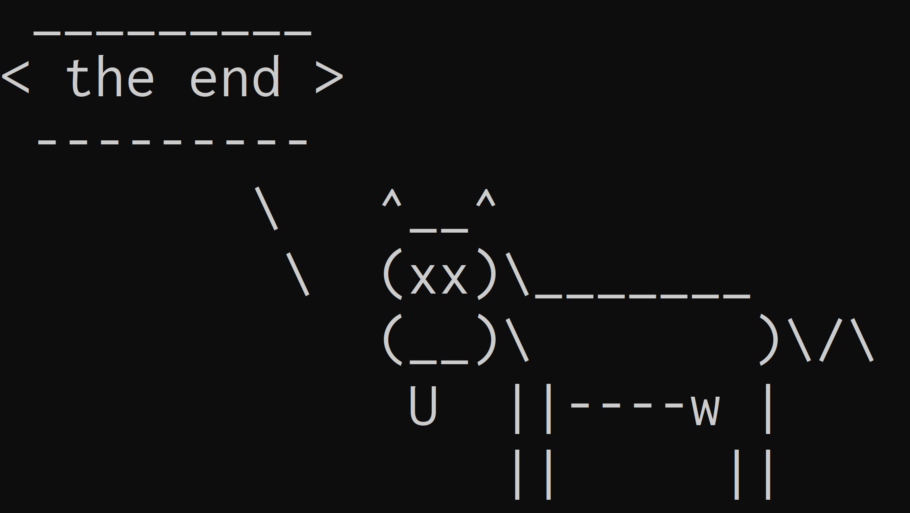

Modern shell utilities
For a fun and colourful command line experience
Content from the webinar slides for easier browsing.
How to choose tools?
- Popularity (GitHub stars)
- Is it maintained? (date of last commit)
- Number of maintainers
- How polished is the documentation?
- How fast is it? (what language is it written in? Shell/Python will be slower, compiled languages (Rust, C, Go) will be faster.)
ls in colours: eza
What is eza?
eza is a replacement for ls.
- Adds colours.
- Better default options.
- Add
treefeature.
Installation
On your machine
Instructions here.
On the Alliance clusters
eza is not installed on the Alliance clusters, so you have to install it locally under your own user. This is easy to do because it is written in Rust and can be installed with the Rust package manager.
Load a Rust module, install eza, and make sure ~/.cargo/bin is in your path:
module load rust/1.76.0
cargo install ezaYou only need to do this once. Once installed, eza will be accessible on subsequent sessions.
Usage
eza➔ Different colours for directories, symlinks, and different types of files and better defaults (compare ls -al with eza -al).
eza by default shows the output in a human readable format and without the group.
The flags are similar to those of ls with the additional -T, equivalent to running the tree utility:
eza -T python/Alias
You can alias it to ls by adding to your .bashrc or .zshrc file:
alias ls=ezaIf you ever want to use the true ls utility, you can do so with \ls.
Alternative
If you want a simpler and more lightweight way to add colours to your ls outputs, you can look at LS_COLORS (I did this for years until I found eza).
To install it locally in the Alliance clusters, you download and uncompress a script, and copy it to a proper location:
mkdir ./LS_COLORS &&
curl -L https://api.github.com/repos/trapd00r/LS_COLORS/tarball/master |
tar xzf - --directory=./LS_COLORS --strip=1 &&
mkdir -p ~/.local/share &&
cp ~/LS_COLORS/lscolors.sh ~/.local/share &&
rm -r ~/LS_COLORSThen you add to your .bashrc/.zshrc file the sourcing of the script and an alias to ls:
source ~/.local/share/lscolors.sh
alias ls='ls --color'A cat with wings: bat
What is bat?
bat is a replacement for cat.
- Adds syntax highlighting for most programming languages.
- Adds line numbers.
- Adds pager-like search.
- Adds pager-like navigation.
Installation
On your machine
Instructions here.
On the Alliance clusters
bat is already installed on the Alliance clusters.
Usage
Use bat as you would use cat:
bat /home/marie/parvus/prog/progpy/pydoc/basics.pyand you are in your default pager.
Among other options, you can disable the frame with -n and also remove the line numbers with -p.
Faster find: fd
What is fd?
fd is a replacement for find.
- Written in Rust, automatic parallelism ➔ with vastly improved performance.
- More friendly syntax.
- By default excludes binaries as well as hidden files and directories.
- By default excludes patterns from
.gitignoreor other.ignorefiles.
Installation
On your machine
Instructions here.
On the Alliance clusters
fd is already installed on the Alliance clusters.
Basic usage
Search file names for a pattern recursively in current directory:
fd jxfd uses regexp by default, so you can use pattern symbols:
fd jx.*txtSearch file names recursively in another directory:
fd top bash/Print all files in some directory
Current directory:
fdAnother directory:
fd . bash/Options
Search for files with a particular file extension:
fd -e txtUse a globbing pattern instead of regexp:
fd -g wb* bash/Execute command for each result of fd in parallel:
fd top bash/ -x rg layoutExecute command once with all results of fd as arguments:
fd top bash/ -X rg layoutExcluded files and directories
By default, fd excludes hidden files/directories and patterns in .gitignore (you can disable this with -H and -I respectively).
This makes fd combined with tree sometimes more useful than tree alone.
Compare tree bash/ with:
fd . bash/ | tree --fromfileYou can make this a function:
ft () { fd $@ | tree --fromfile }Exclude additional directories or patterns:
fd -E *.txt -E img/ . bash/My personal alias
I prefer to disable the default settings and exclude patterns based on a file I created:
alias fd='fd -u --ignore-file /home/marie/.fdignore'RIP grep: ripgrep
What is ripgrep?
ripgrep provides the rg utility—a replacement for grep.
- Written in Rust, automatic parallelism ➔ with vastly improved performance.
- By default excludes patterns from
.gitignoreor other.ignorefiles. - By default excludes binaries as well as hidden files and directories.
- By default doesn’t follow symlinks
Installation
On your machine
Instructions here.
On the Alliance clusters
rg is already installed on the Alliance clusters.
Usage
Search lines in a file matching a pattern:
rg colour /home/marie/parvus/prog/mint/bash/wb_tools3_slides.qmdSearch lines matching pattern in all files in current directory (recursively):
rg colourrg and fd follow the same principles:
- Use regexp by default.
- Use globbing pattern instead with
-g. - Search recursively by default.
- Same excluded files.
Smart cd: zoxide
What is zoxide?
zoxide allows to easily jump to any directory.
Installation
On your machine
Instructions here.
fzf (see below) adds cool functionality to it, so you might want to install it as well.
On the Alliance clusters
zoxide is not installed on the Alliance clusters, but local installation is easy.
- Install the binary in
~/.local/binwith:
curl -sSfL https://raw.githubusercontent.com/ajeetdsouza/zoxide/main/install.sh | sh- Add
~/.local/binto yourPATHby adding to your.bashrc:
export PATH=$PATH:~/.local/bin- Add to your
.bashrcfile (for Zsh, replacebashwithzshin.zshrc):
eval "$(zoxide init bash)"Choose a different command name
Use this instead to use the command of your choice (e.g. j and ji) instead of the default z and zi:
eval "$(zoxide init --cmd j bash)"Usage
Type z (or whatever command you chose) instead of cd.
You can simplify the path to just a few characters.
If there are multiple locations matching your entry, the algorithm will chose the highest ranking one based on your visit frequency and how recently you visited a path.
This means that you can visit your usual places with a few key strokes. For less frequent places, add more info.
Finally, if you want to choose amongst all possible options in a completion framework, use zi instead and zoxide will open fzf.
Alternative
A tool that served me well until someone pointed zoxide to me is autojump.
Installation
Instructions here for your machine.
autojump is installed on the Alliance clusters, but you need add to your .bashrc or .zshrc:
[[ -s $EPREFIX/etc/profile.d/autojump.sh ]] && source $EPREFIX/etc/profile.d/autojump.shUsage
Similar to zoxide but you first need to visit directories so that they get entered in a database.
j is a wrapper for autojump, jc jumps to subdirectories of current directory.
Fuzzy finding with fzf
What is fzf?
fzf allows to find elements of any list through incremental completion and fuzzy matching. It can be paired with any number of commands.
Installation
On your machine
Instructions here.
On the Alliance clusters
fzf is already installed on the Alliance clusters.
To get fzf kbds and fuzzy completion in your shell, add to your .bashrc:
eval "$(fzf --bash)"and/or your .zshrc:
source <(fzf --zsh)Direct usage
If you run fzf directly, it will search the current directory recursively, do a narrowing selection, and print the result:
fzfYou can make use of fd to remove unnecessary entries:
export FZF_DEFAULT_COMMAND='fd -u --ignore-file /home/marie/.fdignore'fzf kbds
There are 3 default kbds:
Ctl+t➔ paste selected file/dir into the command.Ctl+r➔ paste selected command from history into the command.Alt+c➔cdinto selected dir.
Pipe to fzf
You can also pipe the output of any command that returns a list of elements into fzf.
Look for a file/directory:
ls | fzfMany flags to select order of entries, type of completion, preview, case-sensitivity, and more.
Look for a running process:
ps -ef | fzf --cycle -i -e +s --tac --reverseOf course, you can create aliases and functions using fzf.
You can put the previous command into an alias:
alias proc='ps -ef | fzf --cycle -i -e +s --tac --reverse'Or write a function to kill a running process:
proc_kill () {
local pid
pid=$(ps -ef |
sed 1d |
fzf --cycle --reverse -i -e -m --bind "ctrl-o:toggle-all" \
--header "Tab: toggle, C-o: toggle-all" |
awk '{print $2}')
echo $pid | xargs kill -${1:-15}
}Search your command history:
his () {
fc -ln 1 |
rg -v '^q$|^x$|^vs$|^ek .*$|^zoom$|^c$|^cca$|^rs ...$|^hobu$|^cd$|^kzo$|^ih.?$|^zre$|^j m$|^y$|^g$|^-$|^auradd$' |
fzf --cycle -i -e +s --tac --reverse |
sed 's/ *[0-9]* *//'
}Search your command history and run the selection:
his_run () {
$(fc -ln 1 |
rg -v '^q$|^x$|^vs$|^ek .*$|^zoom$|^c$|^cca$|^rs ...$|^hobu$|^cd$|^kzo$|^ih.?$|^zre$|^j m$|^y$|^g$|^-$|^auradd$' |
fzf --cycle -i -e +s --tac --reverse |
sed 's/ *[0-9]* *//')
}An example with preview to open the selection with emacsclient:
ie () {
emacsclient -c $(
fzf --cycle -i -e --reverse \
--preview="source-highlight --failsafe -f esc256 -i {}"
)
}File system TUIs
What is a TUI?
Terminal user interfaces (TUIs) are the predecessors to graphical user interfaces (GUIs) which are entirely text based and run in terminals.
They have remained very popular among command line aficionados because they are fast, efficient, powerful, and keyboard-driven, while being friendly and visual.
Fantastic modern ones keep being built for tasks as diverse as interfaces to Git, music players, games, emails, dashboards, and, for our purpose here, file system management.
Older popular file system TUIs
There are many file system TUIs and all of them are actually really good. The two most notable ones used to be:
Extremely sophisticated, easy to customize, tons of features.
Built in Python, it can be slow for operations in directories with thousands of files.
Minimalist and very fast (written in C).
Not easy to customize (many customizations require compiling from source). Most functionalities rely on plugins that need to be installed. Not easy to get started with.
The new kid: yazi
yazi is a brand new fs TUI that has quickly become the most popular.
It is extremely modern, very fast (written in Rust), very well documented, intuitive, easy to customize, and integrates with modern utilities such as fd, rg, zoxide, and fzf out of the box.
Only at version 0.4, it is not fully mature yet, but it has already more stars on GitHub than ranger and nnn because it combines ease of customization and sophistication with speed.
Alternatives
In decreasing number of stars on GitHub:
Z shell plugins
My 3 favourite plugins
There are many plugins for Z shell and the (very bloated) Oh My Zsh, but I am sticking to 3 great plugins inspired or directly coming from the Fish shell:
Installation
All plugins can be installed (info in their README) or simply Git cloned. zsh-syntax-highlighting is already installed on the Alliance clusters, so you only need to clone the other two:
# create a directory to store the scripts
mkdir ~/.zsh_plugins
# autosuggestions
git clone https://github.com/zsh-users/zsh-autosuggestions.git ~/.zsh_plugins/zsh-autosuggestions
# history substring search
git clone https://github.com/zsh-users/zsh-history-substring-search.git ~/.zsh_plugins/zsh-history-substring-searchThen you need to source them (including zsh-syntax-highlighting), so add to your .zshrc file:
source $EPREFIX/usr/share/zsh/site-functions/zsh-syntax-highlighting.zsh
source ~/.zsh_plugins/zsh-history-substring-search/zsh-history-substring-search.zsh
source ~/.zsh_plugins/zsh-autosuggestions/zsh-autosuggestions.zshUsage
You now have syntax highlighting in your shell inputs.
To use the history substring search, start typing some command then press Alt+p or Alt+n. It will cycle through all entries in your history that start that way
Finally, the autosuggestion will suggest commands based on your history and/or classic suggestions. Accept the whole command with Ctl+e or a single word with Alt+f.
